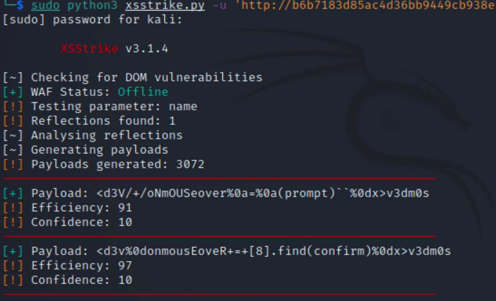
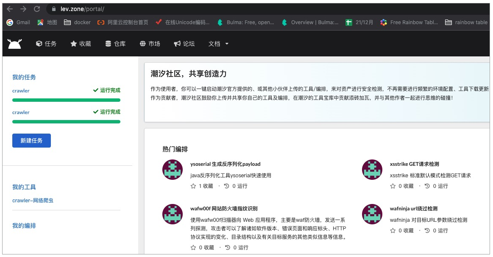
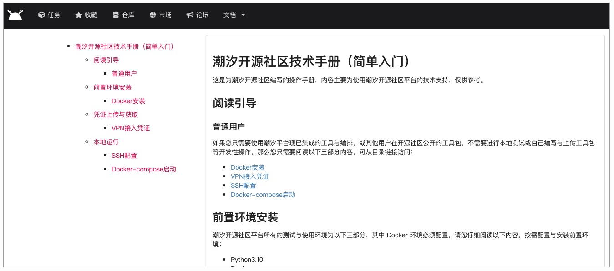

- 00 导读 解读OWASP Top10 2021.md.html
- 00 开篇词 从黑客的视角找漏洞，从安全的角度优雅coding.md.html
- 01 失效的访问控制：攻击者如何获取其他用户信息？.md.html
- 02 路径穿越：你的Web应用系统成了攻击者的资源管理器？.md.html
- 03 敏感数据泄露：攻击者如何获取用户账户？.md.html
- 04 权限不合理：攻击者进来就是root权限？.md.html
- 05 CSRF：为什么用户的操作他自己不承认？.md.html
- 06 加密失败：使用了加密算法也会被破解吗？.md.html
- 07 弱编码：程序之间的沟通语言安全吗？.md.html
- 08 数字证书：攻击者可以伪造证书吗？.md.html
- 09 密码算法问题：数学知识如何提高代码可靠性？.md.html
- 10 弱随机数生成器：攻击者如何预测随机数？.md.html
- 11 忘记加“盐”：加密结果强度不够吗？.md.html
- 12 注入（上）：SQL注入起手式.md.html
- 13 注入（下）：SQL注入技战法及相关安全实践.md.html
- 14 自动化注入神器（一）：sqlmap的设计思路解析.md.html
- 15 自动化注入神器（二）：sqlmap的设计架构解析.md.html
- 16 自动化注入神器（三）：sqlmap的核心实现拆解.md.html
- 17 自动化注入神器（四）：sqlmap的核心功能解析.md.html
- 19 失效的输入检测（上）：攻击者有哪些绕过方案？.md.html
- 20 失效的输入检测（下）：攻击者有哪些绕过方案？.md.html
- 21 XSS（上）：前端攻防的主战场.md.html
- 22 XSS（中）：跨站脚本攻击的危害性.md.html
- 23 XSS（下）：检测与防御方案解析.md.html
- 24 资源注入：攻击方式为什么会升级？.md.html
- 25 业务逻辑漏洞：好的开始是成功的一半.md.html
- 26 包含敏感信息的报错：将安全开发标准应用到项目中.md.html
- 27 用户账户安全：账户安全体系设计方案与实践.md.html
- 28 安全配置错误：安全问题不只是代码安全.md.html
- 29 Session与Cookie：账户体系的安全设计原理.md.html
- 30 HTTP Header安全标志：协议级别的安全支持.md.html
- 31 易受攻击和过时的组件：DevSecOps与依赖项安全检查.md.html
- 32 软件和数据完整性故障：SolarWinds事件的幕后⿊⼿.md.html
- 33 SSRF：穿越边界防护的利刃.md.html
- 34 Crawler VS Fuzzing：DAST与机器学习.md.html
- 35 自动化攻防：低代码驱动的渗透工具积累.md.html
- 36 智能攻防：构建个性化攻防平台.md.html
- 大咖助场 数字证书，困境与未来.md.html
- 春节策划（一） 视频课内容精选：Web渗透测试工具教学.md.html
- 春节策划（三） 一套测试题，看看对课程内容的掌握情况.md.html
- 春节策划（二） 给你推荐4本Web安全图书.md.html
- 结束语 无畏前行.md.html
- 捐赠
34 Crawler VS Fuzzing：DAST与机器学习
你好，我是王昊天。
经过之前的学习，相信你已经对Web漏洞挖掘的基础知识有了一定的理解。其中，我们学习了多种Web漏洞攻击方式，例如SQL注入以及SSRF攻击。事实上，网络攻防与战争是类似的。攻击者就好像侵略者一样想要通过攻击行为去获取一些资源或者满足自己的目的，而Web应用开发者则像抵抗军一样去尽力守护自己的城市。
我对战争也有一定的研究，在八国联军侵略祖国时，我们对敌军飞机的进攻束手无策，只有在看到它之后使用手枪尝试发射子弹击落它们。这无论是对敌人的侦查以及攻击方式都是不够强力的。当我们祖国富强之后，有了雷达探测以及导弹系统，就能及时发现敌人的飞机并将它们击落。其实，在网络攻防中也存在类似于雷达、导弹一样的工具，它们为Crawler与Fuzzing，这一讲就让我们一起学习它吧！
Crawler VS Fuzzing
Crawler即网络爬虫，我们可以利用它来爬取一些自己想要的数据，例如豆瓣网的评分以及财经网的股市信息等。在网络攻防中它还具有另一个作用，我们可以用它来爬取待攻击页面的所有链接，这样就可以扩充我们的攻击目标，使我们不仅对当前页面发起攻击，还可以对其相关的页面进行攻击。所以，我们说 Crawler就像个雷达一样，它可以扫描当前页面的信息。这样，我们就能获取一些其它可供攻击的目标页面。
而Fuzzing即模糊测试，你可能对它较为陌生，不过请不用担心，事实上它就是一种软件测试技术，我们可以通过提供大量非预期的输入并监视异常结果来发现软件的故障，从而寻找Web应用的漏洞。可见 Fuzzing 则像一个导弹一样，可以对页面发起强有力的攻击行为。
接下来，我们将具体学习一下它们。首先，我们来学习Crawler的相关知识。
Crawler网络爬虫
Crawler网络爬虫是一种按照一定的规则，从Web应用中获取想要的信息的程序或脚本，我们常将它称为网页蜘蛛、网络机器人。
这么说可能有点抽象，为了让你更好地理解网络爬虫，下面我们一起看一个简单的示例。
from urllib import request
print(request.urlopen(request.Request("https://lev.zone/")).read().decode("utf-8"))
上述是一段 Python 爬虫代码，利用它我们就可以获取到潮汐社区首页的内容。运行代码获取到的输出为：
...
<p class="tlak_p">使用潮汐时，你无需进行工具的安装或环境的配置，即可一键开启使用，在线对安全资产进行检测，极速开启主动安全学习之旅。</p>
...
<h5 class="mt-4">自动化攻击编排</h5>
<p class="tlak_p">在潮汐，你可以根据接口，调用不同的安全工具，创建自动化的攻击检测编排，也可以直接使用其他小伙伴贡献的自动化编排，体验自动化主动安全检测的魅力！</p>
...
<a href="./pages/how-use.html" class="text-dark icon-move-right">了解更多
由于内容太多，这里我截取了一部分输出，可以看到我们已经成功获取到了潮汐页面的内容。之后，你可以利用一些比较好用的 Python 库例如BS4，对数据内容进行解析，提取出我们需要的数据。这样，我们无需访问页面也可以获取到页面中我们想要的信息啦。
除此之外，还有很多情况需要Crawler爬虫的支持。一个典型的场景为冷启动问题，例如一个社区在创立之初，它的用户数目肯定是很少的，有一些新加入的用户看到社区没什么人，很容易因此放弃使用该社区。开发者为了避免这种情况，就会使用爬虫去一些人流量较大的Web应用例如微博，爬取一些用户的动态放到自己的社区里，这有利于构造出社区的氛围。
另一种情形为搜索引擎，如今有很多出名的搜索引擎，例如百度以及 Google。它们当中保存有很多的数据，这些数据都是通过爬虫所获取到的。总体来说，现在是一个大数据时代，我们可以通过爬虫这个低成本高收益的方式去获取想要的数据。
以上都是爬虫的通用功能，而对于攻击者而言，爬虫对我们也是有很多帮助的。当我们想要攻击一个Web应用时，例如http://lev.zone，我们会想要获取这个Web页面的所有链接，这可以扩大我们的攻击面，使得我们攻击成功的概率增加。而需要做到这点，我们**只需要将爬虫获取到的内容做解析，将其中 中的内容进行提取，就可以获取到页面的链接了**。
到这里，你已经对Crawler网络爬虫的实现方式、原理及功能有了一定的了解。下面，让我们一起学习另一部分Fuzzing模糊测试的内容。
Fuzzing模糊测试
Fuzzing技术最早诞生于1950年，那时候的计算机数据主要保存在打孔卡片上，计算机程序想要对数据进行操作就需要读取这些卡片的数据进行计算和输出。
这个设想是可行的，可是有时候会有一些垃圾卡片，计算机在读取它们时会获得一些不正常的输入信息，这些偶然的错误会导致计算机程序产生错误和异常甚至崩溃，这就是Fuzzing最初的来历。
如今，随着计算机技术的发展，Fuzzing技术也在不断发展，现在的Fuzzing是依靠计算机软件自动执行的，包括使用随机函数生成随机的测试用例，然后计算机会将这些输入发送给测试接口，并自动分析系统是否因为这些输入导致异常的发生。这种依赖于计算机的自动执行方式会使得Fuzzing的效率大大提升。效率的提高也使得Fuzzing模糊测试成为了目前最主流的漏洞挖掘方案，据了解，近年来80%以上的漏洞都是通过Fuzzing发现的。
不知道你是否还记得我们在学习XSS注入时，曾经学过一款名为XSStrike的XSS检测工具，事实上它就是一款典型的Fuzzing工具。

从工具的使用截图中，我们可以看到它按照一定的格式随机生成了很多的payload，然后将它发送给我们指定的链接，并将页面的异常响应概率返回给了我们。这就是Fuzzing模糊测试的功能之一，其实我们还可以利用它来绕WAF、判断Web应用是否有注入漏洞以及 Bug 的存在。
到这里，你已经对Fuzzing模糊测试有了一定的理解，接下来，让我们一起进入到实战部分，将Crawler以及Fuzzing相结合，这可以帮助你更好地理解Crawler与Fuzzing各自的作用与彼此之间的联系。
实战部分
从这一讲的实战部分开始，我们将会用到一个好用的安全工具网站——潮汐社区版http://lev.zone。它可以帮助我们解决安全工具使用的相关问题，例如安全工具的使用、更新及维护，我们利用它可以便捷地使用各种安全工具。如果你乐于分享，你也可以将自己的工具上传到其中，供其他用户使用。
接下来，我们需要点击立即体验并注册账号，在注册过程中需要用到邀请码，你使用VefMiMj7N37tHDL7即可，不过它仅可支持有限个用户使用。然后登录进去，就能看到很多的安全工具啦。

其中就包括了Crawler工具以及Fuzzing工具。不过我们在使用之前需要进行一定的配置设置。
这里需要点击网页顶栏的文档，然后选择使用说明就可以看到该应用的配置方式。

注意，因为我们仅仅需要使用集成好了的工具，所以我们只用按照文档完成 Docker安装、VPN介入凭证设置、SSH连接配置以及Docker-compose启动这四步即可。完成之后，我们就可以任意使用其中的工具了。
首先，我们选择crawler:1.0这款工具，然后用它来创建一个任务，它可以用来爬取一个网站的所有同域名链接。
这里，我们选择谜团http://mituan.zone中的专项·XSS跨站脚本攻击（实战）作为靶场，将它的链接例如：
http://be10a2b2f16548f38ed07112904ddaa8.app.mituan.zone
输入到crawler工具中，点击运行，等待任务完成就会返回爬取到的链接：
http://be10a2b2f16548f38ed07112904ddaa8.app.mituan.zone/level1.php?name=test
这样，我们就完成了爬虫的功能，接着，我们将爬取到的链接传递给Fuzzing模糊测试工具XSStrike使用。
结合我们之前对XSStrike的学习，从它运行的结果来看，我们可以判断出该页面存在XSS注入攻击。
到这里，我们已经成功运用了Crawler与Fuzzing对一个Web应用发起漏洞探测。
总结
在这一讲中，我们学习了Crawler网络爬虫与Fuzzing模糊测试。
首先，我们分析了Crawler网络爬虫的原理，即向Web应用发送请求获取响应内容，然后从响应内容中提取需要的信息。并且，我们还知道了爬虫的功能，它不仅可以用来获取信息，还可以用来解决冷启动问题。从攻击者角度来说，爬虫还可以用来扩大攻击面，让我们的思维进行扩展。
之后，我们学习了Fuzzing模糊测试，了解到它其实就是按照一定的规则构造随机输入，然后将输入发送给网页接口进行测试，之后根据响应结果是否有异常来判断Web应用是否存在与此相关的安全问题。
最后，我们利用潮汐社区版，在对该Web应用进行一定的配置之后，对谜团中的靶场XSS跨站脚本攻击（实战）发起攻击行为，先使用Crawler网络爬虫获取攻击页面的链接，然后将获取到的链接交给Fuzzing模糊测试工具XSStrike使用，根据结果，我们发现该靶场存在XSS注入问题。
思考题
你认为Fuzzing模糊测试工具的优点有哪些？
欢迎在评论区留下你的思考。如果觉得今天的内容对你有所帮助的话，也欢迎你把课程分享给其他同事或朋友，我们共同学习进步！
© 2019 - 2023 Liangliang Lee. Powered by gin and hexo-theme-book.